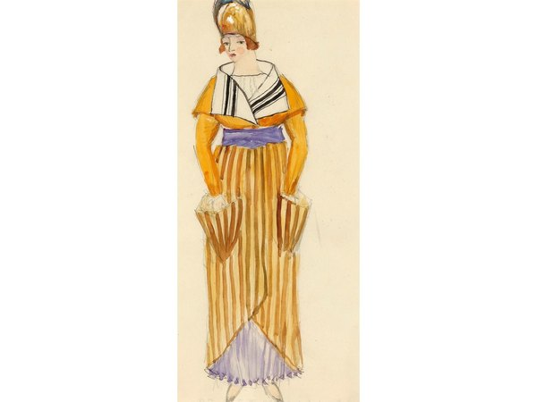
CRVI002539Eduard Josef Wimmer-Wisgrill - Fashion design for the Wiener Werkstätte
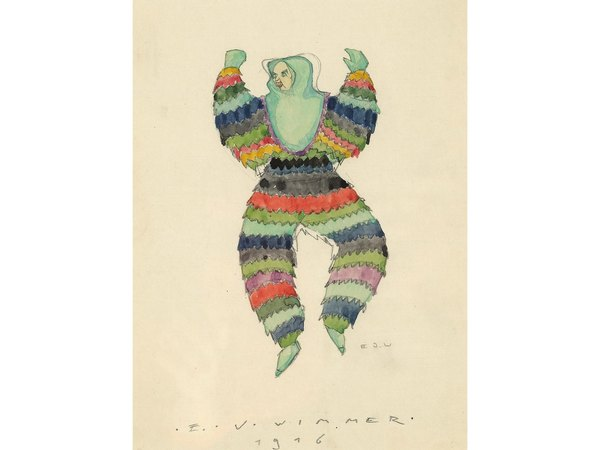
CRVI002540Eduard Josef Wimmer-Wisgrill - Costume design
1916
1916
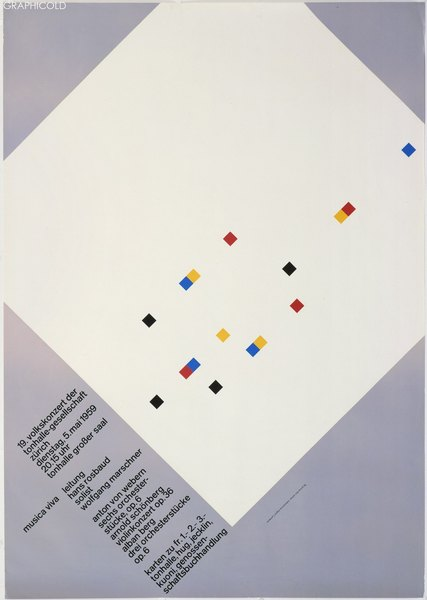
CRVI002516Josef Müller-Brockmann - musica viva
1959
1959
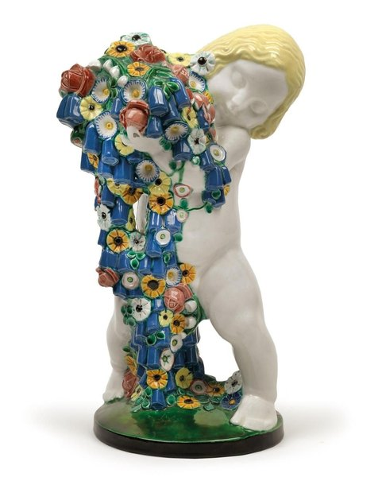
CRVI002541Michael Powolny - Frühling (Spring), from The Four Seasons
1907
1907

CRVI002530Mingering Mike - 20 Hits Plus a Free 45 Entilted "T.V. Dinners of Mines." & "Eat Now and Eat Later"

CRVI002533Mingering Mike - "I'm Superman" b/w "Blind in One Eye"
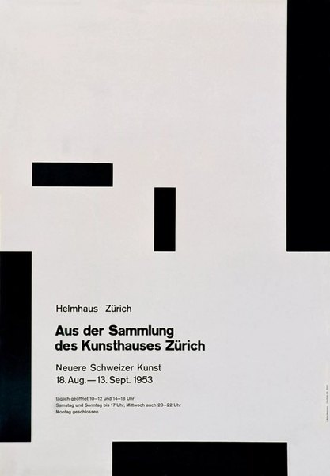
CRVI002519Josef Müller-Brockmann - Helmhaus Zürich: Aus der Sammlung des Kunsthauses Zürich, Neuere Schweizer Kunst
1953
1953
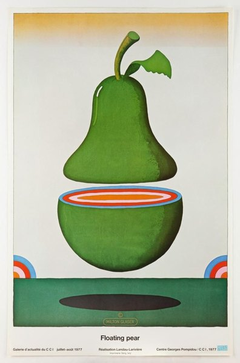
CRVI002508Milton Glaser - Floating pear
1977
1977

CRVI002526Mingering Mike - 3 Footsteps Away from the Altar

CRVI002520Unattributed - Graphiq Magazine Issue 2: Josef Müller-Brockmann, Leader of the Swiss style

CRVI001679Carlo Carrà - Portrait of Marinetti
1915
1915

CRVI001241Mati Klarwein - Godmother
Painting · plate V25-Godmother on the artist's own site
Painting · plate V25-Godmother on the artist's own site

CRVI002496Kiyoshi Awazu - Red and orange arcs on a dark ground

CRVI001039Kiyoshi Awazu - Untitled poster
AGI (Alliance Graphique Internationale) member archive
AGI (Alliance Graphique Internationale) member archive

CRVI000198Unknown - Nope
Reaction GIF · 77 frames, 3.9s loop
Reaction GIF · 77 frames, 3.9s loop

CRVI000550D.W. Pine - Day One.
TIME, February 1-8, 2021 · 2021
TIME, February 1-8, 2021 · 2021

CRVI001743Rudolf Schlichter - Lady with a Red Scarf

CRVI000875John Provencher - [Bloomberg, weather]
Bloomberg Businessweek
Bloomberg Businessweek

CRVI000713Helado Negro - The Last Sound On Earth
Designed by Robert Beatty · 2025
Designed by Robert Beatty · 2025

CRVI000132Tadanori Yokoo - The 5th International Biennial Exhibition of Prints in Tokyo
The National Museum of Modern Art, Tokyo · 11.2–12.15 · 1966
The National Museum of Modern Art, Tokyo · 11.2–12.15 · 1966

CRVI000862Julian Stanczak - Sequential Chroma
Screen print on paper · 76.8 × 65.4 cm · 1978
Screen print on paper · 76.8 × 65.4 cm · 1978

CRVI000700Heavy J - Sister Act
Hand-painted Ghanaian film poster
Hand-painted Ghanaian film poster

CRVI000373Mint Condition - Meant To Be Mint
Designer unknown · Perspective · 1991
Designer unknown · Perspective · 1991

CRVI001855Davis Lisboa - Robert Filliou 32
2024
2024

CRVI001810Tom Wesselmann - Still life
1963
1963

CRVI000546Emily Kimbro - The 50 Best BBQ Joints
Texas Monthly, November 2021 · 2021
Texas Monthly, November 2021 · 2021

CRVI001787Unidentified - Red chevron composition

CRVI001043Kiyoshi Awazu - Contemporary Print Exhibition, 50 Earlham Street Gallery, London
Poster · 1981
Poster · 1981

CRVI000840Ottagono - Ottagono 70
settembre 1983 · anno 18 · 1983
settembre 1983 · anno 18 · 1983

CRVI000444David Pelham - The Drought
Cover for J. G. Ballard · Penguin Science Fiction · 1974
Cover for J. G. Ballard · Penguin Science Fiction · 1974

CRVI001635Emil Nolde - Mask Still Life III
1911
1911

CRVI000709Heavy J - I Think You Should Leave
Hand-painted Ghanaian film poster
Hand-painted Ghanaian film poster

CRVI001045Kiyoshi Awazu - Untitled poster

CRVI002503Milton Glaser - Untitled (mouth with a landscape)

CRVI002147Barbara Kruger - Installation with text

CRVI000632Michael Goesele, Justin Metz - Pop Go the Weasels
Newsweek, November 17, 2017 · 2017
Newsweek, November 17, 2017 · 2017

CRVI000702Heavy J - Raising Arizona
Hand-painted Ghanaian film poster
Hand-painted Ghanaian film poster

CRVI000512D.W. Pine - Unprecedented.
TIME, April 24/May 1, 2023 · 2023
TIME, April 24/May 1, 2023 · 2023

CRVI001690Luigi Russolo - Chioma
1910–1911
1910–1911

CRVI002385Emil Nolde - Crucifixion (Kreuzigung), centre panel of The Life of Christ
1912
1912

CRVI001113unattributed - Olivetti — cover with geometric panels
Designer unrecorded
Designer unrecorded

CRVI001817Pauline Boty - With Love to Jean-Paul Belmondo

CRVI002419Gustav Klutsis - Let's Fulfill the Plan of Great Works
1930
1930

CRVI001931Julian Schnabel - Plate painting

CRVI001798Jasper Johns - Target with Plaster Casts
1955
1955

CRVI002529Mingering Mike - From Our Mind to Yours

CRVI001092Kim Laughton - Untitled

CRVI000761Waldemar Świerzy - Czas apokalipsy
Apocalypse Now · Polish film poster · 1981
Apocalypse Now · Polish film poster · 1981

CRVI000545James Van Fleteren - Build a Better Breakfast Sandwich
EatingWell, May 2021 · 2021
EatingWell, May 2021 · 2021

CRVI001216Pharoah Sanders - Karma
Designed by Robert & Barbara Flynn, photograph by Chuck Stewart · Impulse! AS-9181 · 1969
Designed by Robert & Barbara Flynn, photograph by Chuck Stewart · Impulse! AS-9181 · 1969

CRVI001780Atsuko Tanaka - Electric Dress
1956
1956

CRVI000730Robert Beatty - Floodgate Companion
Spread · self-published
Spread · self-published

CRVI002382Alan Aldridge - Head composed of figures
1971
1971

CRVI001628Kees van Dongen - Modjesko, Soprano Singer
1908
1908

CRVI001666Robert Delaunay - Rythme n° 1
1912
1912

CRVI002016Zeng Fanzhi - Van Gogh

CRVI000698Heavy J - Tampopo
Hand-painted Ghanaian film poster
Hand-painted Ghanaian film poster

CRVI002168Fernando Botero - The Study of Vermeer

CRVI001245Mati Klarwein - Clone (unfinished)
Painting · plate V32-clone-unfinished on the artist's own site
Painting · plate V32-clone-unfinished on the artist's own site

CRVI002156William Eggleston - Untitled

CRVI001249Mati Klarwein - Nativity
Painting · plate V03-Nativity on the artist's own site
Painting · plate V03-Nativity on the artist's own site

CRVI000725The Weeknd - Dawn FM
Designed by Robert Beatty · 2022
Designed by Robert Beatty · 2022

CRVI001164Lee Morgan - Cornbread
Designed by Reid Miles, photograph by Francis Wolff · Blue Note BST 84222 · 1967
Designed by Reid Miles, photograph by Francis Wolff · Blue Note BST 84222 · 1967

CRVI000873John Provencher - [On, Clubhouse Paris]
On · Clubhouse Paris
On · Clubhouse Paris

CRVI002405Peter Max - Two seated figures

CRVI000445John Griffith - The Black Cloud
Cover for Fred Hoyle · Penguin
Cover for Fred Hoyle · Penguin

CRVI001638Emil Nolde - Red-Haired Girl
1919
1919
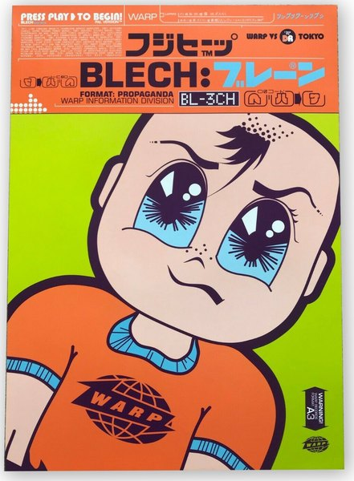
CRVI002469Warp Records - Blech (Japanese edition)

CRVI000082Klaus Weiss - Time Signals
Designer unknown · Selected Sound · 1978
Designer unknown · Selected Sound · 1978

CRVI002548Felice Rix-Ueno - Gespinst
1924
1924

CRVI001294Gene Ammons' All Stars - The Big Sound
Designer unrecorded · Prestige 7132 · 1958
Designer unrecorded · Prestige 7132 · 1958

CRVI000835Mona Chalabi - Congratulations, You’re A Parent! Here’s $1. Now Take This Quiz…
New York Magazine
New York Magazine

CRVI001532Alexandre Hogue - Crucified Land
1939
1939

CRVI002022Bharti Kher - Untitled

CRVI000843domus - domus 1109
February 2026 · 2026
February 2026 · 2026

CRVI001108Martin Wong - Portrait of Mikey Piñero at Ridge Street and Stanton
Acrylic on canvas, 72 × 72 in · also titled “La Vera de Nuyorico: Miguel Piñero” · 1985
Acrylic on canvas, 72 × 72 in · also titled “La Vera de Nuyorico: Miguel Piñero” · 1985

CRVI001714Heinrich Campendonk - Bucolic Landscape
1913
1913

CRVI001030Adrian Ghenie - Untitled painting
Oil on canvas · Sold Sotheby's London
Oil on canvas · Sold Sotheby's London

CRVI002505Milton Glaser - Mahalia Jackson - Easter Sunday - Philharmonic Hall, Lincoln Center
1967
1967

CRVI001042Kiyoshi Awazu - Poster Nippon
Screenprint · LACMA, Marc Treib Collection · 1972
Screenprint · LACMA, Marc Treib Collection · 1972

CRVI000187E. McKnight Kauffer - Point Counter Point
Dust jacket for Aldous Huxley's Point Counter Point · The Modern Library, New York · 1942
Dust jacket for Aldous Huxley's Point Counter Point · The Modern Library, New York · 1942

CRVI002246Mark Rothko - Untitled

CRVI000624David Plunkert - Blowhard
The New Yorker, August 28, 2017 · 2017
The New Yorker, August 28, 2017 · 2017

CRVI000446Unknown - The New Men
Cover for C. P. Snow · Penguin
Cover for C. P. Snow · Penguin

CRVI000691Mr. Nana Agyq - Austin Powers in Goldmember
Hand-painted Ghanaian film poster
Hand-painted Ghanaian film poster

CRVI000252Lech Majewski - Ras le cœur
Film Poster Designed By Lech Majewski · 1980 · 1980
Film Poster Designed By Lech Majewski · 1980 · 1980

CRVI002220Anni Albers - Wall hanging

CRVI001643Max Pechstein - Indian and Woman
1910
1910

CRVI002381Alan Aldridge - Captain Fantastic and the Brown Dirt Cowboy (album cover)
1975
1975

CRVI000682Mr. Nana Agyq - Gummo
Hand-painted Ghanaian film poster · after the film by Harmony Korine
Hand-painted Ghanaian film poster · after the film by Harmony Korine

CRVI001195Mati Klarwein - Bitches Brew
Painting · the whole gatefold work · 1969
Painting · the whole gatefold work · 1969

CRVI001675Giacomo Balla - Self-Portrait
1902
1902

CRVI001132Grant Green - Goin' West
Designer unrecorded · Blue Note BST 84310 · 1969
Designer unrecorded · Blue Note BST 84310 · 1969

CRVI000425Bob Thompson and His Orchestra & Chorus - Just For Kicks
Designer unknown · RCA Victor · 1959
Designer unknown · RCA Victor · 1959

CRVI001142Jackie McLean - Demon's Dance
Designed by Bob Venosa, artwork by Mati Klarwein · Blue Note BST 84345 · 1970
Designed by Bob Venosa, artwork by Mati Klarwein · Blue Note BST 84345 · 1970

CRVI000032Earle Brown - Music By Earle Brown
Artwork by Judith Lerner · Composers Recordings Inc. · 1974
Artwork by Judith Lerner · Composers Recordings Inc. · 1974
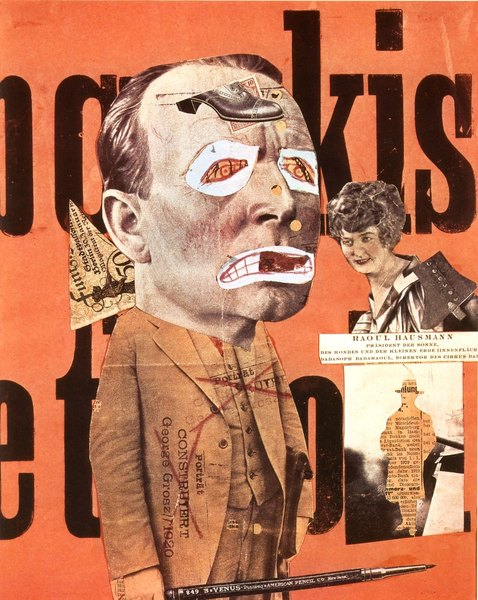
CRVI001488Unidentified - Dada photomontage naming Raoul Hausmann

CRVI000358Stevie Wonder - Fulfillingness' First Finale
Designer unknown · Tamla · 1974
Designer unknown · Tamla · 1974

CRVI001372Eric Dolphy - Out There
Cover painting by Richard “Prophet” Jennings · New Jazz 8252 · 1960
Cover painting by Richard “Prophet” Jennings · New Jazz 8252 · 1960

CRVI000563Kadir Nelson - High Style
The New Yorker, February 14 and 21, 2022 · 2022
The New Yorker, February 14 and 21, 2022 · 2022

CRVI001619Paul Ranson - Nude on a patterned ground

CRVI001830Richard Anuszkiewicz - The Fourth of the Three
1963
1963

CRVI002054John Currin - The Neverending Story
1994
1994

CRVI001806James Rosenquist - Source for President Elect
1961
1961

CRVI001503Gustav Klutsis - Without Heavy Industry We Cannot Build Any Industry
Poster · 1930
Poster · 1930

CRVI002528Mingering Mike - Sittin' at Home with the Lowdown Blues

CRVI000443David Pelham - The Drowned World
Cover for J. G. Ballard · Penguin Science Fiction · 1974
Cover for J. G. Ballard · Penguin Science Fiction · 1974

CRVI001529Jack Levine - The Arrest
1983
1983

CRVI001467Albert Joseph Moore - Midsummer
1887
1887

CRVI002216Josef Albers - Homage to the Square

CRVI002488Celia Cruz - The Queen of Salsa

CRVI001812Richard Hamilton - Just what is it that makes today's homes so different, so appealing?
1956
1956

CRVI001694Filippo Tommaso Marinetti - Parole in libertà
1932
1932

CRVI002379Jan Sawka - Jan Sawka: Paintings & Constructions (exhibition poster)
1985
1985

CRVI001306June Christy - Off Beat
Designer unrecorded · Capitol T 1498 · 1960
Designer unrecorded · Capitol T 1498 · 1960

CRVI001646Akseli Gallen-Kallela - Head of a man at a blue window

CRVI000390Fennesz - Endless Summer
Designer unknown · 2001
Designer unknown · 2001

CRVI001107Martin Wong - Psychiatrists Testify: Demon Dogs Drive Man to Murder
Acrylic on canvas, 36 × 48 in · also titled “Demon Dogs Drive Man to Murder” · 1980
Acrylic on canvas, 36 × 48 in · also titled “Demon Dogs Drive Man to Murder” · 1980
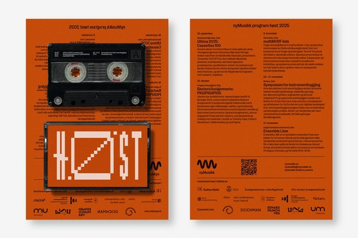
CRVI002435Non-Format - nyMusikk — Høst 2025
2025
2025

CRVI001275Howard McGhee - Howard McGhee
Designed by Paul Bacon · Blue Note 5012 · 1952
Designed by Paul Bacon · Blue Note 5012 · 1952

CRVI000096Stock, Hausen & Walkman - Organ Transplants Vol. 1
Designer unknown · Hot Air · 1996
Designer unknown · Hot Air · 1996

CRVI001312Martin Denny - Exotica
Photograph by Garrett-Howard · Liberty LRP 3034 · 1957
Photograph by Garrett-Howard · Liberty LRP 3034 · 1957

CRVI000397Frankie Knuckles - Beyond The Mix
Designer unknown · Virgin · 1991
Designer unknown · Virgin · 1991

CRVI00004023 Skidoo - Seven Songs
Artwork by Neville Brody · Fetish Records · 1982
Artwork by Neville Brody · Fetish Records · 1982

CRVI002537Koloman Moser - Ver Sacrum, poster for the XIII Secession exhibition
1902
1902

CRVI001228Mati Klarwein - Untitled
Painting · plate P15-vol2-82 on the artist's own site
Painting · plate P15-vol2-82 on the artist's own site

CRVI000602Unknown - Living With the Computer
New York, January 9, 1984 · 1984
New York, January 9, 1984 · 1984
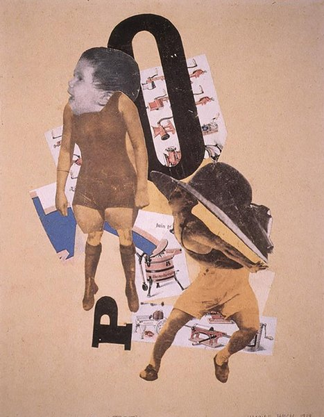
CRVI001485Hannah Höch - Photomontage with a child and the letter P

CRVI001986Njideka Akunyili Crosby - Re-Branding My Love
2011
2011

CRVI001231Mati Klarwein - Untitled
Painting · plate P14-vol2-77 on the artist's own site
Painting · plate P14-vol2-77 on the artist's own site

CRVI001854Davis Lisboa - Robert Filliou 35
2024
2024

CRVI002004Otobong Nkanga - Unearthed – Sunlight
2021
2021

CRVI000775Brownjohn, Chermayeff & Geismar - That New York
About U.S. — Experimental Typography by American Designers · The Composing Room · 1960
About U.S. — Experimental Typography by American Designers · The Composing Room · 1960

CRVI002477Ralfi Pagán - I Can See

CRVI002478Típica 73 - Típica '73
1972
1972

CRVI002485Fania All-Stars - Lo Que Pide La Gente
1984
1984

CRVI001715Heinrich Campendonk - Stillleben mit zwei Köpfen
1914
1914

CRVI001546Lois Mailou Jones - Woman in a turban with masks

CRVI001310Les Baxter - 'Round The World With Les Baxter
Designer unrecorded · Capitol T 780 · 1957
Designer unrecorded · Capitol T 780 · 1957

CRVI001483Hannah Höch - Collage of eyes in a vase

CRVI000594Unknown - Money Advisor: How to Borrow Money… Cleverly
New York, January 24, 1972 · 1972
New York, January 24, 1972 · 1972

CRVI002032Nicole Eisenman - Beer garden

CRVI001276Gil Mellé Quintet - New Faces – New Sounds
Designed by Gil Mellé · Blue Note 5020 · 1953
Designed by Gil Mellé · Blue Note 5020 · 1953

CRVI000079John Bender - I Don't Remember Now
Designer unknown · Record Sluts · 1980
Designer unknown · Record Sluts · 1980

CRVI002039Tauba Auerbach - Metamaterial Slice Ray

CRVI000659Unknown - Bang Head Here
Bloomberg Businessweek, May 28–June 3, 2012 · 2012
Bloomberg Businessweek, May 28–June 3, 2012 · 2012

CRVI000704Farkira - Oppenheimer
Hand-painted Ghanaian film poster
Hand-painted Ghanaian film poster

CRVI000868Julian Stanczak - [Untitled]

CRVI002077Christian Schad - Street scene with figures
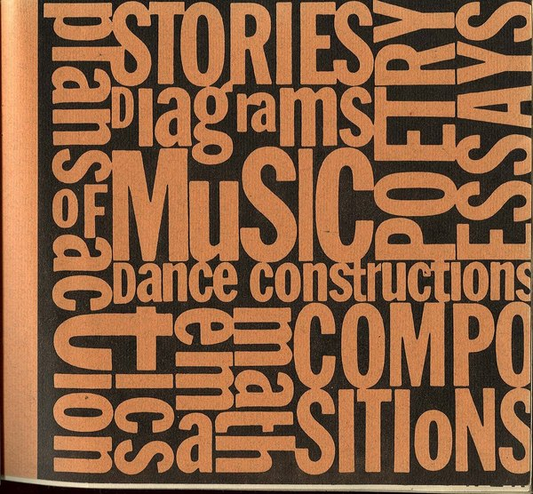
CRVI001862George Maciunas - An Anthology of Chance Operations
Cover · 1963
Cover · 1963

CRVI001427Paul Signac - Woman with a Parasol
1893
1893

CRVI000825Seymour Chwast - Canto XVIII, PPG #52
Push Pin Graphic #52 · 46 × 71 cm · 1967
Push Pin Graphic #52 · 46 × 71 cm · 1967

CRVI000139Jutaro Itoh - Hiroshima (orange)
廣島
廣島

CRVI000570Gail Bichler - Boxed In
The New York Times Magazine, December 4, 2022 · 2022
The New York Times Magazine, December 4, 2022 · 2022

CRVI001835Unidentified - Striped composition

CRVI000229Paolo Achenza Trio - Do It
Designer unknown · Right Tempo · 1994
Designer unknown · Right Tempo · 1994

CRVI000865Julian Stanczak - [Untitled]
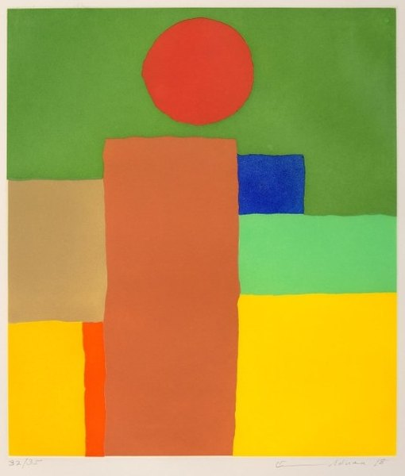
CRVI002184Etel Adnan - Équilibre

CRVI000319Cornelius - Fantasma
Designer unknown · Trattoria · 1997
Designer unknown · Trattoria · 1997

CRVI001300Blossom Dearie - Once Upon A Summertime
Designed by Gene Federico · Verve Records MG V-2606 · 1958
Designed by Gene Federico · Verve Records MG V-2606 · 1958

CRVI000524Cian Browne - Taylor Russell
W, January 2023 · 2023
W, January 2023 · 2023

CRVI001206The Jazz Messengers - The Complete Jazz Messengers At The Cafe Bohemia
Designed by Reid Miles, photograph by Francis Wolff · Blue Note · 1956
Designed by Reid Miles, photograph by Francis Wolff · Blue Note · 1956

CRVI001570Christian Schad - Halbakt
1929
1929

CRVI001556Remedios Varo - Creation with Astral Rays
1955
1955
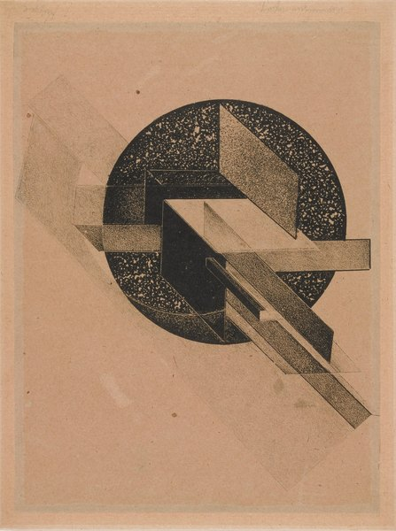
CRVI002423Gustav Klutsis - Axionometric Construction
1921
1921

CRVI000101p-Ziq - Lunatic Harness
Designer unknown · Planet Mu · 1997
Designer unknown · Planet Mu · 1997

CRVI002142Sherrie Levine - After Mondrian

CRVI001340Chris Foss - Dune — a spacecraft
Illustration by Chris Foss
Illustration by Chris Foss

CRVI000361Betty Wright - Hard to Stop
Designer unknown · TK · 1973
Designer unknown · TK · 1973

CRVI002059Christina Quarles - Exhibition image
2023
2023

CRVI000782Ivan Chermayeff - Ford Madox Ford’s The Good Soldier
Mobil Masterpiece Theatre · 1983
Mobil Masterpiece Theatre · 1983

CRVI000493Bill Mayer - When Pets Escape: The Great Goldfish Invasion
The New York Times for Kids, January 28, 2024 · 2024
The New York Times for Kids, January 28, 2024 · 2024

CRVI002296Jeff Koons - String of Puppies
1988
1988

CRVI000736Robert Beatty - Untitled
Album cover · artist and title unrecorded · Trendland plate 05
Album cover · artist and title unrecorded · Trendland plate 05

CRVI000879Maurice Denis - L’Oratorio pour « L’Éternel Printemps »
Oil on joined paper laid down on canvas · 142 × 201 cm · 1904
Oil on joined paper laid down on canvas · 142 × 201 cm · 1904

CRVI002276Frank Stella - Untitled
1974
1974

CRVI002128Bruce Nauman - Double Poke in the Eye II

CRVI002232Oskar Schlemmer - Frauenschule
1930
1930

CRVI001425Unidentified - Divisionist portrait of a bearded man

CRVI001537David Alfaro Siqueiros - Our Present Image
1947
1947

CRVI001468Albert Joseph Moore - A Reverie
1892
1892

CRVI001785Akira Kanayama - Work
1952
1952

CRVI001693Filippo Tommaso Marinetti - Les mots en liberté futuristes
Book · 1919
Book · 1919

CRVI002368John Currin - Hot Pants
2010
2010

CRVI000131Shigeo Fukuda - [Poster: paperclip with legs]
Title not established
Title not established

CRVI000861Julian Stanczak - Yellow Filtration
Screenprint · 66 × 66 cm · 1981
Screenprint · 66 × 66 cm · 1981

CRVI001549Joan Miró - The Vegetable Garden with Donkey
1918
1918

CRVI001378Thad Jones, Frank Wess, Teddy Charles - Olio
Designed by Diz Disley · Esquire 32-065 · 1957
Designed by Diz Disley · Esquire 32-065 · 1957

CRVI000329Marvin Gaye & Tammi Terrell - United
Designer unknown · Tamla · 1967
Designer unknown · Tamla · 1967
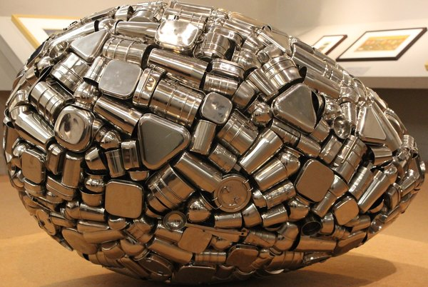
CRVI002021Subodh Gupta - Untitled (egg)

CRVI001318Tanya Tucker - TNT
Photograph by Olivier Ferrand · MCA Records AY-1104 · 1978
Photograph by Olivier Ferrand · MCA Records AY-1104 · 1978

CRVI000564Thandiwe Muriu - Global Cool
Virtuoso, September/October 2022 · 2022
Virtuoso, September/October 2022 · 2022

CRVI000716Thee Oh Sees - Joe Westerland
Designed by Robert Beatty · 2025
Designed by Robert Beatty · 2025

CRVI001341unattributed - Trust
Maker unidentified
Maker unidentified

CRVI001873Agnes Martin - Untitled (White Flower)
1961
1961
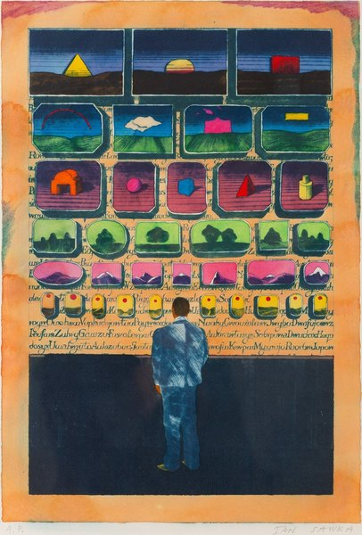
CRVI002370Jan Sawka - Print with framed landscape panels above a figure at a wall
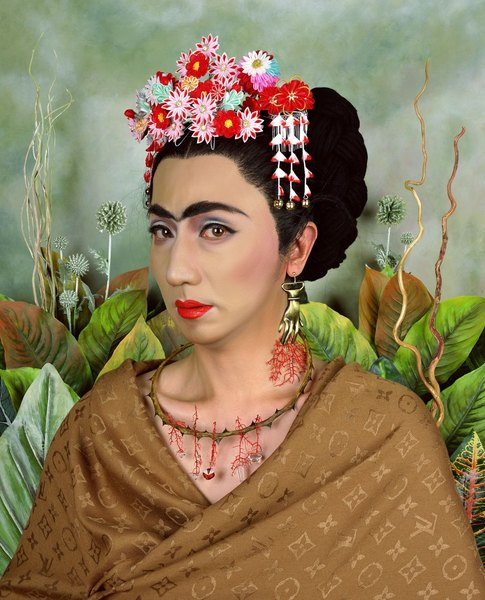
CRVI002178Yasumasa Morimura - Self-portrait after Frida Kahlo

CRVI000135Shigeo Fukuda - UCC Coffee
Advertising
Advertising

CRVI002053John Currin - The Nursery
1994
1994
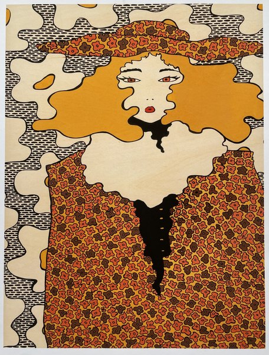
CRVI001441Unidentified - Woman with flowing hair

CRVI002050John Currin - Untitled
1992
1992

CRVI002192Georges Braque - Harbor in Normandy
1909
1909

CRVI000623Lia Kantrowitz, Kitron Neuschatz, Elizabeth Renstrom - Burnout and Escapism
VICE, December 2018 · 2018
VICE, December 2018 · 2018

CRVI001440Josh MacPhee - Huelga

CRVI000740Robert Beatty - Untitled
Album cover · artist and title unrecorded · Trendland plate 11
Album cover · artist and title unrecorded · Trendland plate 11

CRVI001489Max Ernst - Self-Portrait
1909
1909

CRVI001538Jean Charlot - Wisdom of the West
Mural · 1967
Mural · 1967

CRVI001919Ana Mendieta - Untitled (Fetish Series, Iowa)
1977
1977

CRVI002536Koloman Moser - Stoffentwurf „Abimelech" für Backhausen
1899
1899

CRVI001737Kirill Zdanevich - Composition with bottle and figures

CRVI000816Seymour Chwast - Blues Project
Offset lithograph · 102.2 × 75.2 cm · 1968
Offset lithograph · 102.2 × 75.2 cm · 1968

CRVI001135Grant Green - Sunday Mornin'
Designed by Reid Miles, photograph by Francis Wolff · Blue Note BLP 4099 · 1962
Designed by Reid Miles, photograph by Francis Wolff · Blue Note BLP 4099 · 1962

CRVI001598Théo van Rysselberghe - Poster for the Lembrée Gallery
Poster · 1897
Poster · 1897

CRVI002075Christian Schad - Portrait of a boy

CRVI001189Mati Klarwein - Soundscape
Painting
Painting

CRVI001630Ernst Ludwig Kirchner - Wrestlers in a Circus
1909
1909

CRVI001233Mati Klarwein - Annunciation
Painting · plate V02-Annunciation4 on the artist's own site
Painting · plate V02-Annunciation4 on the artist's own site

CRVI001426Paul Signac - The Pine Tree at Saint-Tropez
1909
1909

CRVI000863Julian Stanczak - Sharing in Orange
Acrylic on canvas · 107.3 × 107.3 cm · 1970
Acrylic on canvas · 107.3 × 107.3 cm · 1970

CRVI001504Stanton Macdonald-Wright - Synchromy No. 3
1917
1917

CRVI001677Carlo Carrà - The Red Horseman
1913
1913

CRVI001072David Rudnick - Artwork for black midi

CRVI002218Josef Albers - Study for Homage to the Square: Deep Tune
1963
1963

CRVI001681Carlo Carrà - Stazione a Milano
1909
1909
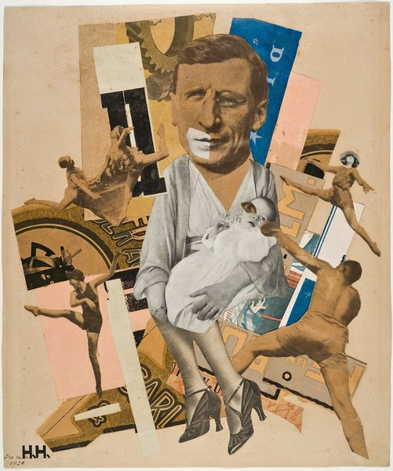
CRVI001484Hannah Höch - Photomontage with a man holding a white cat

CRVI000385Herman Chin Loy - Aquarius Recording Co
Designer unknown · Ltd. · 1975
Designer unknown · Ltd. · 1975

CRVI001716Heinrich Campendonk - Stillleben mit Fisch
1916
1916

CRVI001438Alphonse Mucha - Au Quartier Latin
Cover · 1898
Cover · 1898

CRVI000503Unknown - The Year of the Taco
Texas Monthly, November 2020 · 2020
Texas Monthly, November 2020 · 2020

CRVI001625Maurice de Vlaminck - The River Seine at Chatou
1906
1906

CRVI002158Nan Goldin - Untitled

CRVI000293Jean-Jacques Perrey - Moog Indigo
Designer unknown · Vanguard · 1970
Designer unknown · Vanguard · 1970

CRVI002124Alma Woodsey Thomas - Untitled

CRVI000150Art Blakey's Jazz Messengers - Art Blakey's Jazz Messengers
Designed by Marvin Israel · Atlantic 1278 · 1957
Designed by Marvin Israel · Atlantic 1278 · 1957

CRVI001433Koloman Moser - XIII. Ausstellung der Vereinigung Bildender Künstler Österreichs Secession
Poster · 1902
Poster · 1902

CRVI000185Ernst Reichl - Ulysses
Dust jacket for James Joyce's Ulysses · Random House, New York · 1934
Dust jacket for James Joyce's Ulysses · Random House, New York · 1934

CRVI001462John William Waterhouse - A Neapolitan Flax Spinner
1877
1877

CRVI001053Yello - Solid Pleasure
Designer unrecorded · Ralph Records YL 8059-L · 1980
Designer unrecorded · Ralph Records YL 8059-L · 1980

CRVI001617Alphonse Mucha - Zodiaque (La Plume)
Poster · 1896–97
Poster · 1896–97

CRVI002198Marcel Duchamp - Sad Young Man on a Train
1911
1911

CRVI001794Alma Thomas - Wind Dancing with Spring Flowers
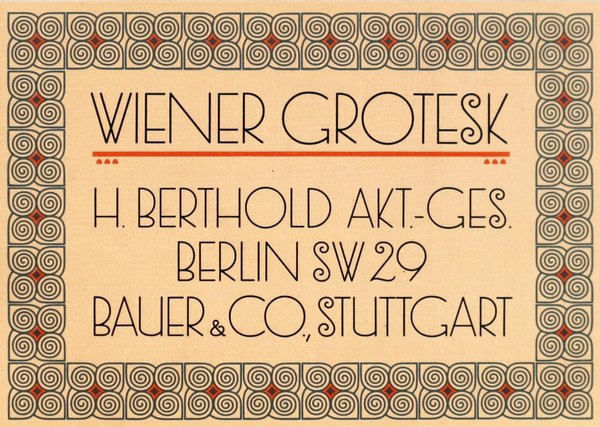
CRVI002543H. Berthold AG - Wiener Grotesk, type specimen
1912
1912

CRVI002425Gustav Klutsis - Propaganda Stand (Workers of the World Unite)
1922
1922

CRVI001735Unidentified - Rayonist composition

CRVI000568Gail Bichler - The New York Issue
The New York Times Magazine, June 5, 2022 · 2022
The New York Times Magazine, June 5, 2022 · 2022

CRVI001634Karl Schmidt-Rottluff - Gartenstraße frühmorgens
1906
1906

CRVI000838Ottagono - Ottagono 62
settembre 1981 · 1981
settembre 1981 · 1981

CRVI001831Richard Anuszkiewicz - Grand Treasure
1968
1968

CRVI002275Agnes Martin - Untitled

CRVI000577Alvin Lustig - A Handful of Dust
Evelyn Waugh · New Directions, New Classics NC8 · 1945
Evelyn Waugh · New Directions, New Classics NC8 · 1945

CRVI001539Jacob Lawrence - Bar and Grill
1941
1941

CRVI001946Unidentified - Golden spiral painting

CRVI002415Filippo Tommaso Marinetti - Zang Tumb Tumb: Adrianopoli Ottobre 1912: Parole in Libertà (cover)
1914
1914

CRVI001274Fats Navarro - Memorial Album
Designed by Paul Bacon · Blue Note 5004 · 1953
Designed by Paul Bacon · Blue Note 5004 · 1953

CRVI000342Major Lance - Um, Um, Um, Um, Um, Um (Seasaint Version)
Designer unknown · Okeh · 1964
Designer unknown · Okeh · 1964

CRVI001098Einstürzende Neubauten - Kollaps
Designer unrecorded · ZickZack ZZ 65 · 1981
Designer unrecorded · ZickZack ZZ 65 · 1981

CRVI000732Robert Beatty - Untitled
Album cover · artist and title unrecorded · Trendland plate 01
Album cover · artist and title unrecorded · Trendland plate 01

CRVI001506Wyndham Lewis - Workshop
1915
1915

CRVI001401Marvin Israel - Handiwork, from Graphik USA
Marvin Israel · 1968 · screenprint, one from a portfolio of eight · 1968
Marvin Israel · 1968 · screenprint, one from a portfolio of eight · 1968
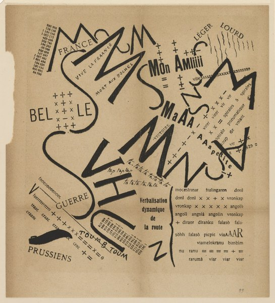
CRVI001697Filippo Tommaso Marinetti - Parole in libertà: Verbalisation dynamique de la route

CRVI001203Mati Klarwein - Untitled
Painting · plate R14-vol3-43 on the artist's own site
Painting · plate R14-vol3-43 on the artist's own site

CRVI002422Gustav Klutsis - Oppressed peoples of the whole world, under the banner of the Comintern, overthrow imperialism
1924
1924

CRVI001530Unidentified - Woman in a hat with a compact mirror

CRVI001641Max Pechstein - Flusslandschaft
1907
1907

CRVI002163Mira Schendel - Untitled
1981
1981
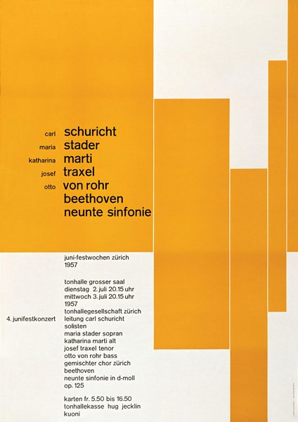
CRVI002510Josef Müller-Brockmann - Juni-Festwochen Zürich 1957
1957
1957

CRVI001750Unidentified - Interior of the Kandinsky/Klee Master House, Dessau
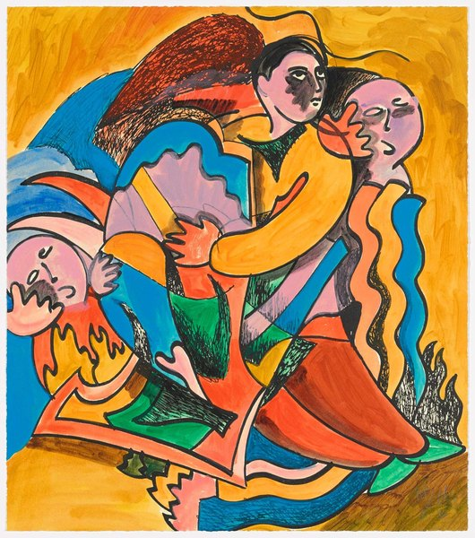
CRVI001933Sandro Chia - Surprising Novel, Chapter Four

CRVI000815Seymour Chwast - E Pluribus Bang!
Viking Press · 1970
Viking Press · 1970

CRVI001799Jasper Johns - Dancers on a Plane

CRVI001633Erich Heckel - Reclining Woman
1909
1909

CRVI002096Frank Auerbach - Head of E.O.W.

CRVI002411Peter Max - One Nation under God—This Is a Blessed Country
1976
1976

CRVI002329Ed Ruscha - Rancho
1968
1968

CRVI002201Marcel Duchamp - The Passage from Virgin to Bride
1912
1912

CRVI002229László Moholy-Nagy - Z II

CRVI000152Cressida - Asylum
Designed by Keef · Vertigo 6360 025 · 1971
Designed by Keef · Vertigo 6360 025 · 1971

CRVI002517Unattributed - type talks

CRVI001627Georges Braque - Fruit Dish
1908
1908

CRVI001536David Alfaro Siqueiros - Self-Portrait (El Coronelazo)
1945
1945

CRVI001770Alfredo Ramos Martínez - Woman with flowers

CRVI001773Nicolas de Staël - Musicians
1953
1953

CRVI002031Dana Schutz - Sneeze
2002
2002

CRVI001469Aubrey Beardsley - Isolde
1895
1895

CRVI002342Robert Delaunay - Rythme
1938
1938

CRVI001560Dorothea Tanning - Eine Kleine Nachtmusik
1943
1943
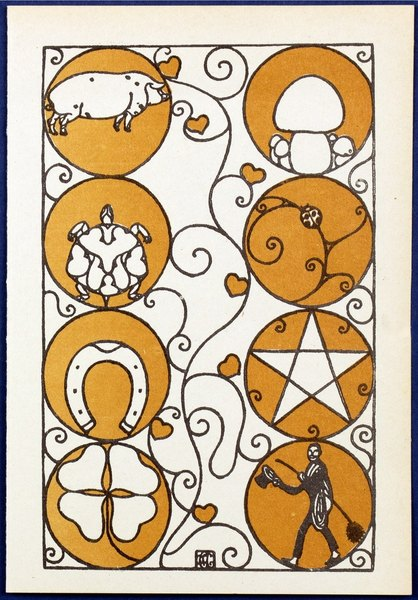
CRVI002538Carl Otto Czeschka - New Year's Card, Wiener Werkstätte postcard No. 252
1909
1909

CRVI001547Lois Mailou Jones - Moon Masque
1971
1971

CRVI002134Carolee Schneemann - Untitled

CRVI001533Diego Rivera - The Adoration of the Virgin
1913
1913

CRVI001424Paul Signac - Opus 217. Against the Enamel of a Background Rhythmic with Beats and Angles, Tones, and Tints, Portrait of M. Félix Fénéon in 1890
1890
1890

CRVI002231Oskar Schlemmer - Rot gegeneinander
1928
1928

CRVI000228Us3 - Hand On The Torch
Typography by Stylorouge · Blue Note CDP 0777 7 80883 2 5 · 1993
Typography by Stylorouge · Blue Note CDP 0777 7 80883 2 5 · 1993

CRVI002507Milton Glaser - Temple University Music Festival
1975
1975

CRVI000603Unknown - Your Telephone Survival Guide
New York, April 23, 1984 · 1984
New York, April 23, 1984 · 1984

CRVI001584George Ault - Mantel Composition
1929
1929

CRVI001264Paul Chambers Quartet - Bass On Top
Designed by Harold Feinstein, photograph by Francis Wolff · Blue Note 1569 · 1957
Designed by Harold Feinstein, photograph by Francis Wolff · Blue Note 1569 · 1957

CRVI001749Unidentified - Axonometric of a modernist house

CRVI002115Philip Guston - Untitled

CRVI000111Kiyoshi Awazu - Contemporary Japanese Sculpture Exhibition — Form and Color
現代日本彫刻展 形と色 · 1973
現代日本彫刻展 形と色 · 1973

CRVI001232Mati Klarwein - Crucifixion
Painting · plate V12-Crucifixion on the artist's own site
Painting · plate V12-Crucifixion on the artist's own site

CRVI001791Morris Louis - Untitled

CRVI000727Raglani - Husk
Front cover · designed by Robert Beatty
Front cover · designed by Robert Beatty

CRVI001801Arman - Violins

CRVI002354René Magritte - Man in a bowler hat with a birdcage

CRVI000216Izuru Utsumi - Utsumi
Designer unknown · Flower · 2002
Designer unknown · Flower · 2002

CRVI000366Dayton - Hot Fun
Designer unknown · Capitol · 1982
Designer unknown · Capitol · 1982

CRVI002089Andreas Gursky - Times Square, New York
1997
1997

CRVI000298Snakefinger - Chewing Hides The Sound
Designer unknown · Ralph · 1979
Designer unknown · Ralph · 1979

CRVI002447Roberto Matta - Ochre construction with hooked forms

CRVI002102Piero Manzoni - Merda d'artista (Artist's Shit)
1961
1961

CRVI001302Glen Campbell - Rhinestone Cowboy
Designer unrecorded · Capitol SW-11430 · 1975
Designer unrecorded · Capitol SW-11430 · 1975

CRVI001736Mikhail Larionov - Le Paon
Costume design
Costume design

CRVI001414Giorgio de Chirico - Gentiluomo in villeggiatura
Giorgio de Chirico · date unrecorded
Giorgio de Chirico · date unrecorded

CRVI002191Georges Braque - Castle at La Roche-Guyon
1909
1909

CRVI002272Agnes Martin - Buds
1959
1959

CRVI001544Lois Mailou Jones - Textile Design

CRVI001626Raoul Dufy - Self-Portrait
1899
1899

CRVI001802Andy Warhol - Mao
1972
1972

CRVI001761Josef Albers - Study for Homage to the Square: Departing in Yellow
1964
1964

CRVI000596Unknown - Special 16-Page Section for New York Kids
New York, June 25, 1973 · 1973
New York, June 25, 1973 · 1973

CRVI002217Josef Albers - Homage to the Square

CRVI002461Eric Yahnker - Wrecking Ball
2014
2014

CRVI000367Peter Bentley - The Malayan Trilogy
Cover for Anthony Burgess · Penguin
Cover for Anthony Burgess · Penguin

CRVI001246Mati Klarwein - Sun & Moon
Painting · plate V18-Sun-Moon on the artist's own site
Painting · plate V18-Sun-Moon on the artist's own site

CRVI002273Agnes Martin - Untitled

CRVI000272Meridian Brothers - Desesperanza
Designer unknown · Soundway · 2012
Designer unknown · Soundway · 2012

CRVI000037Orb - Orbus Terrarum
Artwork by MadArk · Island Records · 1995
Artwork by MadArk · Island Records · 1995

CRVI001623André Derain - Henri Matisse
1905
1905

CRVI001792Kenneth Noland - Drought
1962
1962

CRVI002260Roy Lichtenstein - M-Maybe

CRVI001722František Kupka - Self-Portrait
1907
1907

CRVI000692Stoger - Air Bud
Hand-painted Ghanaian film poster
Hand-painted Ghanaian film poster

CRVI000673Rob Vargas, Alicia Tatone, Micaiah Carter - The New Masculinity Issue
GQ, November 2019 · 2019
GQ, November 2019 · 2019

CRVI001707August Macke - Tree in the Cornfield
1907
1907

CRVI001661Jean Metzinger - Femme assise au bouquet de feuillage
1905
1905

CRVI001243Mati Klarwein - Angel, Brazilian
Painting · plate V10-Angel-Brazilian on the artist's own site
Painting · plate V10-Angel-Brazilian on the artist's own site

CRVI000686Leonardo - Fantastic Planet
Hand-painted Ghanaian film poster · after the film by René Laloux
Hand-painted Ghanaian film poster · after the film by René Laloux

CRVI001733Natalia Goncharova - Cats (Rayist Perception in Rose, Black and Yellow)
1913
1913

CRVI001104Utagawa Yoshifusa - Two Samurai, from Twenty-four Famous Generals of Kai
Woodblock print (nishiki-e) · Kai Nijuyon-sho no Uchi · 1843–1845
Woodblock print (nishiki-e) · Kai Nijuyon-sho no Uchi · 1843–1845

CRVI000831Seymour Chwast - I, Claudius
Mobil Masterpiece Theatre · 76 × 118 cm · 1976
Mobil Masterpiece Theatre · 76 × 118 cm · 1976

CRVI001191Mati Klarwein - Blessing
Painting · plate V15-Blessing(HIGH_RES) on the artist's own site
Painting · plate V15-Blessing(HIGH_RES) on the artist's own site

CRVI001028Adrian Ghenie - Untitled painting
Oil on canvas · Sold Sotheby's London
Oil on canvas · Sold Sotheby's London

CRVI001667Robert Delaunay - Window
1912
1912

CRVI000714Robert Beatty - 3 Day Gallon
Ahem Editions print · 2026
Ahem Editions print · 2026

CRVI001339unattributed - Dune — a palace
Maker unidentified
Maker unidentified

CRVI001631Ernst Ludwig Kirchner - Coffee Drinking Women
1907
1907

CRVI002380Alan Aldridge - Head as a glass globe of figures

CRVI000456Peter Bentley - Helena
Cover for Evelyn Waugh · Penguin
Cover for Evelyn Waugh · Penguin

CRVI000017David Chesworth - 50 Synthesizer Greats
Designed by Geronimo Creative Services · 1979
Designed by Geronimo Creative Services · 1979

CRVI001751Unidentified - Abstract composition after Kandinsky

CRVI000834Seymour Chwast - The Left-Handed Designer
Jacket panel · Harry N. Abrams · 1985
Jacket panel · Harry N. Abrams · 1985

CRVI000738Robert Beatty - Untitled
Album cover · artist and title unrecorded · Trendland plate 07
Album cover · artist and title unrecorded · Trendland plate 07

CRVI001133Grant Green - Live At The Lighthouse
Designed by John Van Hamersveld, photograph by Al Vandenberg · Blue Note BN-LA037-G2 · 1972
Designed by John Van Hamersveld, photograph by Al Vandenberg · Blue Note BN-LA037-G2 · 1972

CRVI001307Lee Morgan - Charisma
Designed by Ann Meisel, photograph by Francis Wolff · Blue Note 4312 · 1969
Designed by Ann Meisel, photograph by Francis Wolff · Blue Note 4312 · 1969

CRVI001247Mati Klarwein - Timeless
Painting · plate V14-Timeless on the artist's own site
Painting · plate V14-Timeless on the artist's own site

CRVI000609Unknown - First, We Kill All the Computers
New York, July 24, 1995 · 1995
New York, July 24, 1995 · 1995

CRVI001553André Masson - L'homme emblématique
1939
1939

CRVI000814Seymour Chwast - June 12 March
Mixed media · 46 × 61 cm · 1982
Mixed media · 46 × 61 cm · 1982

CRVI001978Kehinde Wiley - Two women in yellow and pink

CRVI000582Alvin Lustig - World Inventors Exposition
1947
1947

CRVI001409Peter Max - The American Cosmic Jumper in the Land of Rainbows and Stars
Peter Max · 1976 · billboard for the GSA Art-in-Architecture Program · 1976
Peter Max · 1976 · billboard for the GSA Art-in-Architecture Program · 1976

CRVI000744Jeffery Keedy - Cranbrook Graduate Studies in Fiber
Poster
Poster

CRVI000417Lakim Shabazz - Pure Righteousness
Designer unknown · Tuff City · 1988
Designer unknown · Tuff City · 1988

CRVI001979Amy Sherald - A Certain Kind of Happiness
2022
2022

CRVI000145Gentle Giant - Octopus
Designed by Roger Dean · 1972
Designed by Roger Dean · 1972

CRVI001099Kim Laughton - Untitled

CRVI002093Lucian Freud - Naked Girl Asleep II
1968
1968

CRVI001871Unidentified - Wave composition

CRVI002527Mingering Mike - Sickle Cell Anemia

CRVI002049John Currin - Bea Arthur Naked

CRVI002086Andreas Gursky - Shanghai
2000
2000

CRVI001983Amy Sherald - Woman in a teal dress

CRVI001676Carlo Carrà - Swimmers
1912
1912

CRVI001237Mati Klarwein - St John
Painting · plate V05-St-John-3 on the artist's own site
Painting · plate V05-St-John-3 on the artist's own site

CRVI002165Roberto Matta - Atlas de médication

CRVI000398Fingers Inc. - Another Side
Designer unknown · Jack Trax · 1988
Designer unknown · Jack Trax · 1988

CRVI001055Takenobu Igarashi - Alphabet
Published by the Takenobu Igarashi Archive
Published by the Takenobu Igarashi Archive

CRVI000338Eddie Floyd - Knock On Wood
Designer unknown · Stex · 1967
Designer unknown · Stex · 1967

CRVI001698Filippo Tommaso Marinetti - Futurismo
Poster · 1932
Poster · 1932
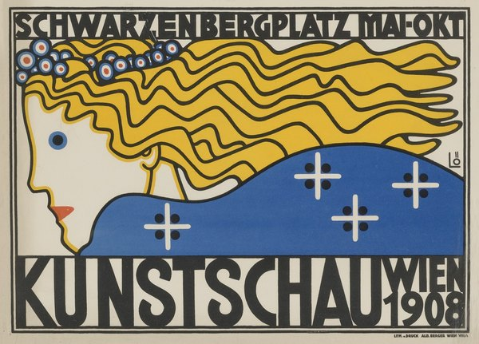
CRVI002542Berthold Löffler - Kunstschau Wien 1908
1908
1908

CRVI001415Paul Bacon, Ken Braren and Harris Lewine - Everybody Digs Bill Evans
Album cover · Riverside RLP 1129 · 1959
Album cover · Riverside RLP 1129 · 1959

CRVI001853Ben Vautier - L'art est inutile / Pas d'art / À bas l'art

CRVI000126Shigeo Fukuda - The World of Shigeo Fukuda in U.S.A.
M.H. de Young Memorial Museum, San Francisco · Junior Art Center, Los Angeles · Santa Barbara Museum of Art · 1971
M.H. de Young Memorial Museum, San Francisco · Junior Art Center, Los Angeles · Santa Barbara Museum of Art · 1971
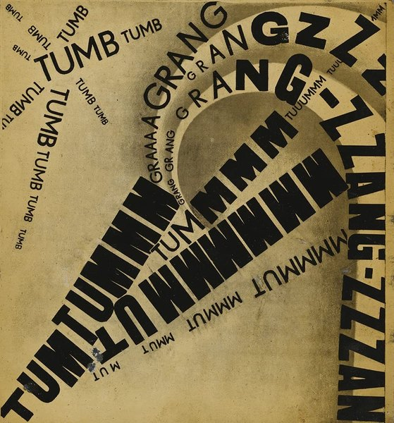
CRVI002412Filippo Tommaso Marinetti - TUMB TUMB / GRANG GRANG / ZZZANG-ZZZANG-TUMB

CRVI001288Tadd Dameron with John Coltrane - Mating Call
Designed by Esmond Edwards, Tom Hannan · Prestige 7070 · 1957
Designed by Esmond Edwards, Tom Hannan · Prestige 7070 · 1957

CRVI001123Jackie McLean - Jacknife
Designed by Bob Cato, photograph by Raymond Ross · Blue Note BN-LA457-H2 · 1975
Designed by Bob Cato, photograph by Raymond Ross · Blue Note BN-LA457-H2 · 1975

CRVI001497El Lissitzky - New Man
1923
1923

CRVI002371Jan Sawka - Two suited figures sharing a red head

CRVI000433Neutral Milk Hotel - In The Aeroplane Over The Sea
Designer unknown · MGM Records · 1998
Designer unknown · MGM Records · 1998

CRVI000790Paul Rand - Golden Circle
IBM · Kauai Surf Hotel, Hawaii · 1981
IBM · Kauai Surf Hotel, Hawaii · 1981

CRVI001196Mati Klarwein - Time
Painting
Painting

CRVI000123Shigeo Fukuda - Jazz Festival Montreux
19e Festival de Jazz Montreux, 5–20 juillet 1985 · 100 x 70 cm · 1985
19e Festival de Jazz Montreux, 5–20 juillet 1985 · 100 x 70 cm · 1985

CRVI001663Jean Metzinger - Bacchante
1906
1906

CRVI001352Barney Bubbles - Elvis Costello — portrait poster
Designed by Barney Bubbles
Designed by Barney Bubbles

CRVI000244Matthias Vogt Trio - Changing Colours
Designer unknown · INFRACom! · 2006
Designer unknown · INFRACom! · 2006

CRVI002199Marcel Duchamp - The King and Queen Surrounded by Swift Nudes
1912
1912

CRVI001729Stanton Macdonald-Wright - Still Life with Red Vase Synchromy

CRVI000821Seymour Chwast - Nicholas Nickleby
Mobil Showcase Network · 76 × 118 cm · 1983
Mobil Showcase Network · 76 × 118 cm · 1983

CRVI001399Giorgio de Chirico - The Two Masks
Giorgio de Chirico · 1926 · 1926
Giorgio de Chirico · 1926 · 1926

CRVI002389Emil Nolde - Sea under yellow clouds

CRVI001235Mati Klarwein - Conceptual Tree
Painting · plate V19-Conceptual-Tree on the artist's own site
Painting · plate V19-Conceptual-Tree on the artist's own site

CRVI000097Tonto - It's About Time
Designer unknown · Polydor · 1974
Designer unknown · Polydor · 1974

CRVI001753Unidentified - The Bauhaus building, Dessau

CRVI001636Emil Nolde - Dance Around the Golden Calf
1910
1910

CRVI002319Tauba Auerbach - Marbled composition

CRVI001562Giorgio de Chirico - The Gentle Afternoon
1916
1916

CRVI001783Shōzō Shimamoto - Untitled

CRVI001642Max Pechstein - The Masked Woman
1910
1910

CRVI001765Anni Albers - Design for Wall Hanging
1925
1925

CRVI002094Lucian Freud - Portrait of Christian Bérard
1948
1948

CRVI002206Wassily Kandinsky - Light Picture (Helles Bild)
1913
1913

CRVI001731Arthur Dove - Sun
1943
1943

CRVI002242unattributed - Prismatic composition in pale greens, pinks and yellows

CRVI001251Howard Wales & Jerry Garcia - Hooteroll?
Painting by Mati Klarwein · Douglas KZ 30859 · 1971
Painting by Mati Klarwein · Douglas KZ 30859 · 1971

CRVI001795Alma Thomas - The Eclipse

CRVI000585Unknown - The Future of the Democratic Party
New York, November 4, 1968 · 1968
New York, November 4, 1968 · 1968

CRVI000649Unknown - Speaking Emoji
New York, November 17-23, 2014 · 2014
New York, November 17-23, 2014 · 2014

CRVI000772Erving Goffman - Interaction Ritual
Doubleday Anchor Original A596 · cover signed “Giusti” · 1967
Doubleday Anchor Original A596 · cover signed “Giusti” · 1967

CRVI001938Unidentified - Woman with pink flowers

CRVI000299The Residents - The Commercial Album
Designer unknown · Ralph · 1980
Designer unknown · Ralph · 1980

CRVI002170Frank Bowling - Flow with Spencer I
2012
2012

CRVI000220James Brown & The Famous Flames - Think!
Designer unknown · King · 1960
Designer unknown · King · 1960

CRVI002259Roy Lichtenstein - Crying Girl
1963
1963

CRVI000718Oneohtrix Point Never - Magic Oneohtrix Point Never
Insert panel A · designed by Robert Beatty · Warp Records · 2020
Insert panel A · designed by Robert Beatty · Warp Records · 2020

CRVI002458Roberto Matta - Red and yellow ground with pale figures

CRVI002531Mingering Mike - Channels of a Dream

CRVI000147The Grassella Oliphant Quartette - The Grass Roots
Designed by Loring Eutemey · 1965
Designed by Loring Eutemey · 1965

CRVI001784Sadamasa Motonaga - Untitled
1993
1993

CRVI000042Tropic Of Cancer - Restless Idylls
Designed by Oliver Smith · 2013
Designed by Oliver Smith · 2013

CRVI001111Rudy VanderLans - Emigre No. 5, Edizione Italo-Francese
Magazine cover · 43 × 29.1 cm, 30 pages · Emigre Inc., Berkeley · 1986
Magazine cover · 43 × 29.1 cm, 30 pages · Emigre Inc., Berkeley · 1986

CRVI000817Seymour Chwast - The South, PPG #54
Push Pin Graphic #54 · 21.6 × 21.6 cm · 1969
Push Pin Graphic #54 · 21.6 × 21.6 cm · 1969

CRVI000742George Greaves - Untitled
Illustration
Illustration

CRVI002522Unattributed - Dynamic Perspective: Optically Intriguing

CRVI002483Ray Barretto - Barretto Power
1970
1970

CRVI000688Farkira - Best in Show
Hand-painted Ghanaian film poster
Hand-painted Ghanaian film poster

CRVI002052John Currin - The Shaving Man
1993
1993

CRVI002502Milton Glaser - Zabriskie Point
1970
1970

CRVI001475Paul Cézanne - The Pigeon Tower at Bellevue
1890
1890

CRVI000352Earth, Wind & Fire - AIl 'N' AIl
Designer unknown · Columbia · 1977
Designer unknown · Columbia · 1977

CRVI000435Sufjan Stevens - Illinois
Designer unknown · Asthmatic Kitty · 2005
Designer unknown · Asthmatic Kitty · 2005

CRVI002398Ray Barretto con Adalberto Santiago - Rican/Struction
1979
1979

CRVI000687Heavy J - Blue Velvet
Hand-painted Ghanaian film poster · after the film by David Lynch
Hand-painted Ghanaian film poster · after the film by David Lynch

CRVI001963Mark Bradford - Untitled (detail)

CRVI001411Robert Rauschenberg - Banner (Stoned Moon)
Robert Rauschenberg · 1969 · lithograph, Gemini G.E.L. · 1969
Robert Rauschenberg · 1969 · lithograph, Gemini G.E.L. · 1969

CRVI002123Faith Ringgold - Dancing on the George Washington Bridge

CRVI002186René Magritte - Nocturne
1925
1925

CRVI000598Unknown - We Have Seen the Future and It's New Jersey
New York, June 20, 1977 · 1977
New York, June 20, 1977 · 1977

CRVI000706C.A. Wisely - My Neighbor Totoro
Hand-painted Ghanaian film poster
Hand-painted Ghanaian film poster

CRVI001065Lezley Saar - Cell Realization

CRVI002347René Magritte - The Art of Living (L'art de vivre)
1967
1967

CRVI001637Emil Nolde - Self-Portrait
1912
1912

CRVI002245Mark Rothko - Untitled

CRVI002386Emil Nolde - Red Clouds (Rote Wolken)

CRVI000492Joe Darrow - Sign Here, My Stallion
New York, July 1-14, 2024 · 2024
New York, July 1-14, 2024 · 2024

CRVI000724Forma - Physicalist
Designed by Robert Beatty
Designed by Robert Beatty

CRVI002546Maria Likarz-Strauss - Prosit Neujahr, Wiener Werkstätte postcard No. 744

CRVI001101The Chocolate Watchband - No Way Out
Designer unrecorded · Tower T-5096 · 1967
Designer unrecorded · Tower T-5096 · 1967

CRVI000374TLC - Ooooooohhh... On The TLC Tip
Designer unknown · Laface · 1992
Designer unknown · Laface · 1992

CRVI000124Ikko Tanaka - Nihon Buyo
UCLA Asian Performing Arts Institute · Los Angeles, Washington D.C., New York · 1981
UCLA Asian Performing Arts Institute · Los Angeles, Washington D.C., New York · 1981

CRVI000689C.A. Wisely - Barton Fink
Hand-painted Ghanaian film poster · after the film by Joel and Ethan Coen
Hand-painted Ghanaian film poster · after the film by Joel and Ethan Coen

CRVI001725František Kupka - Disks of Newton (Study for Fugue in Two Colors)
1911
1911

CRVI000708C.A. Wisely - Heat
Hand-painted Ghanaian film poster
Hand-painted Ghanaian film poster

CRVI002344Unidentified - Composition of concentric discs

CRVI001185Robert Venosa - Untitled — winged flame figure
Painting
Painting

CRVI000511Albert Ayler - In Greenwich Village
Designed by Robert & Barbara Flynn · Impulse! · 1967
Designed by Robert & Barbara Flynn · Impulse! · 1967

CRVI000168Capability Brown - Voice
Designer unknown
Designer unknown

CRVI000683C.A. Wisely - Groundhog Day
Hand-painted Ghanaian film poster · 2021
Hand-painted Ghanaian film poster · 2021

CRVI000701C.A. Wisely - Seven Samurai
Hand-painted Ghanaian film poster
Hand-painted Ghanaian film poster

CRVI002239Johannes Itten - Horizontal-Vertical
1915
1915

CRVI001040Kiyoshi Awazu - Noh Performance at UCLA
Poster · The Museum of Modern Art, New York · 1981
Poster · The Museum of Modern Art, New York · 1981

CRVI001493Alexander Rodchenko - Red and Yellow
1918
1918

CRVI000695C.A. Wisely - The Royal Tenenbaums
Hand-painted Ghanaian film poster
Hand-painted Ghanaian film poster

CRVI000485Javier Jaen - Gen Z: Reasons to Be Cheerful
The Economist, April 20-26, 2024 · 2024
The Economist, April 20-26, 2024 · 2024

CRVI000696Farkira - The Harder They Come
Hand-painted Ghanaian film poster
Hand-painted Ghanaian film poster

CRVI000208Unknown - Whoa
Reaction GIF · Chris Farley · 32 frames, 1.4s loop
Reaction GIF · Chris Farley · 32 frames, 1.4s loop

CRVI000201Unknown - Ohhhhh
Reaction GIF · 54 frames, 2.2s loop
Reaction GIF · 54 frames, 2.2s loop

CRVI000348Eddie Hazel - Game, Dames And Guitar Thangs
Designer unknown · Warner · 1977
Designer unknown · Warner · 1977

CRVI000213Unknown - Stare
Reaction GIF · Walton Goggins as Rick Hatchett, The White Lotus · 72 frames, 3.6s loop · 2025
Reaction GIF · Walton Goggins as Rick Hatchett, The White Lotus · 72 frames, 3.6s loop · 2025

CRVI000190Unknown - Shrug
Reaction GIF · Comedy Bang! Bang! · 27 frames, 2.7s loop
Reaction GIF · Comedy Bang! Bang! · 27 frames, 2.7s loop

CRVI001214Mati Klarwein - Last Sunset
Painting · plate L24-last-sunset on the artist's own site
Painting · plate L24-last-sunset on the artist's own site

CRVI000214Unknown - Victoria
Reaction GIF · Parker Posey as Victoria Ratliff, The White Lotus · 117 frames, 3.9s loop · 2025
Reaction GIF · Parker Posey as Victoria Ratliff, The White Lotus · 117 frames, 3.9s loop · 2025

CRVI000211Unknown - Nonverbal Yes
Reaction GIF · Leslie Bibb as Kate, The White Lotus · 39 frames, 3.9s loop · 2025
Reaction GIF · Leslie Bibb as Kate, The White Lotus · 39 frames, 3.9s loop · 2025

CRVI000210Unknown - Confused
Reaction GIF · Jennifer Saunders as Edina Monsoon · 20 frames, 1.3s loop
Reaction GIF · Jennifer Saunders as Edina Monsoon · 20 frames, 1.3s loop

CRVI002501Milton Glaser - Dylan
1966
1966

CRVI002100Gilbert & George - Stained-glass panel composition

CRVI000193Unknown - Dancing
Reaction GIF · 60 frames, 3.6s loop
Reaction GIF · 60 frames, 3.6s loop

CRVI000207Unknown - Wait, What
Reaction GIF · 81 frames, 3.2s loop
Reaction GIF · 81 frames, 3.2s loop
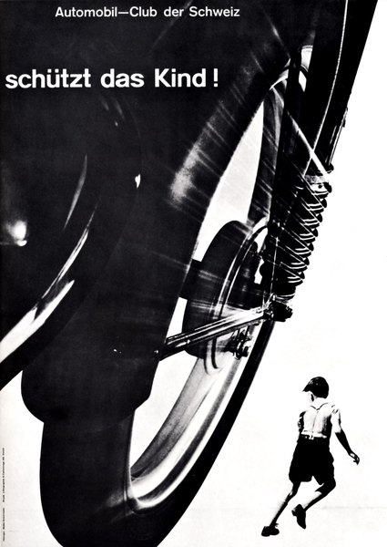
CRVI002512Josef Müller-Brockmann - Automobil-Club der Schweiz: schützt das Kind!
1953
1953
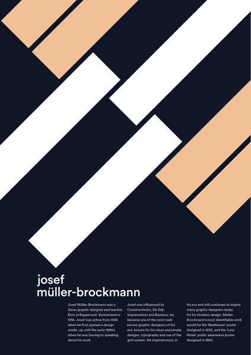
CRVI002509Dan Rawlinson - Josef Müller-Brockmann
2019
2019

CRVI000203Unknown - Popcorn
Reaction GIF · 60 frames, 6.0s loop
Reaction GIF · 60 frames, 6.0s loop

CRVI000194Unknown - Dunno
Reaction GIF · 50 frames, 3.5s loop
Reaction GIF · 50 frames, 3.5s loop

CRVI000204Unknown - Roll Safe
Reaction GIF · Kayode Ewumi as Reece Simpson · 21 frames, 1.1s loop · 2016
Reaction GIF · Kayode Ewumi as Reece Simpson · 21 frames, 1.1s loop · 2016

CRVI000199Unknown - Nope
Reaction GIF · James Harden · 29 frames, 1.7s loop
Reaction GIF · James Harden · 29 frames, 1.7s loop

CRVI000205Unknown - Time
Reaction GIF · Matthew McConaughey as Rust Cohle · 31 frames, 3.1s loop
Reaction GIF · Matthew McConaughey as Rust Cohle · 31 frames, 3.1s loop

CRVI000854Richard Turley - [MTV ident — waterfall face]
MTV ident · animated
MTV ident · animated

CRVI000189Unknown - Nope
Reaction GIF cut from TMZ footage · Rihanna leaving a club · 49 frames, 3.9s loop · 2014
Reaction GIF cut from TMZ footage · Rihanna leaving a club · 49 frames, 3.9s loop · 2014

CRVI000206Unknown - Uhhh
Reaction GIF · 46 frames, 4.6s loop
Reaction GIF · 46 frames, 4.6s loop